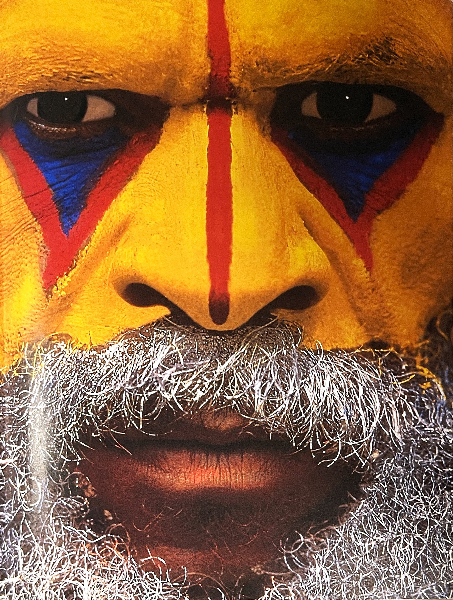
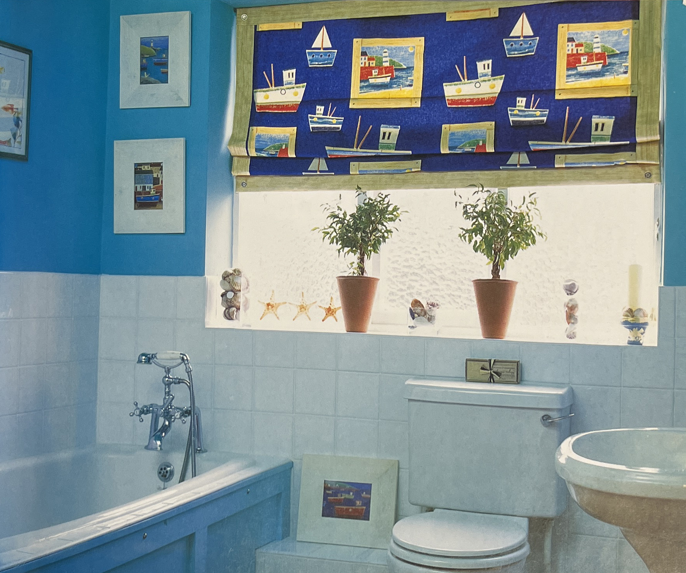
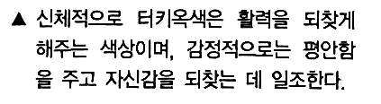

색채 심리는 색채와 관련된 인간의 반응을 연구하는 심리학의 한 분야로서 생리학, 예술, 디자인, 건축 등과 관계를 가진다. 색채 심리학에서는 색채를 지각하는 과정에서부터 색채에 대하여 가지는 인상, 조화감 등에 이르는 여러 문제를 다룬다. 특히 색채가 갖는 기본적인 특성에서 출발하여 인간이 색채에 대하여 갖는 감성적인 면과 미적 반응, 색채의 생리적 영향에 대하여 심도 있게 연구하는 분야이다. 나아가서는 개인적인 기호, 역사성과 지역성 등 폭넓은 분야에 걸쳐 연구한다.
우리가 일상생활을 하면서 보고 느끼는 색채는 하나로 존재하지 않고 복합적으로 존재한다. 그 여러 가지 색 속에는 대비와 조화 그리고 동화라는 인간이 색을 느끼는 과정을 모두 포함하고 있다. 색을 느끼는 과정에서 하나의 색은 대비를 통하여 본래의 색과 다르게 보일 수도 있고, 동화작용을 통해 유사한 색이 되기도 하고, 다른 색과 비교됨으로써 무겁거나 가볍거나 또는 감성적인 느낌을 주는 따뜻한 색이나 차가운 색이 될 수도 있다.
이렇게 발전된 색채의 심리적 영향은 개인에게 싫거나 좋거나 등의 반응을 불러일으키는 선호색과 혐오색이 되며, 나아가 집단이나 지역을 대표하는 상징성 있는 시각언어가 된다. 바로 이러한 색채의 주관적, 객관적 다양성을 연구에 포함한 분야가 색채 심리이다.
색에는 색상, 명도, 채도의 세 가지 속성이 있으며, 이에 따라 색상 대비, 명도 대비, 채도 대비의 세 가지 대비를 생각할 수 있다. 이를테면 검정 속의 하양, 회색 속의 하양은 같은 하양이지만 검정 속의 하양이 더 밝게 보이며명도 대비, 빨강과 초록을 동시에 보면 동시 대비의 작용으로 두 색이 더욱 선명하게 보인다색상 대비. 그리고 회색 위의 초록은 본래의 채도보다도 더 선명한 초록으로 보인다채도 대비. 그러나 우리가 일상 속에서 색을 보는 경우 위의 세 가지 대비가 공존할 때가 많다. 예를 들어 먼 거리에서 더 잘 보이게 하거나 뚜렷하게 보이도록 해야 할 때가 있는데, 그럴 경우에는 배경과 그 앞에 놓이는 그림의 속성차를 크게 해야 한다. 일반적으로 배경색과 그림색의 속성이 다르면 다르수록 그림은 명확하게 인지되고, 멀리서도 잘 보인다. 특히 배경색이 낮은 속성명도가 낮더나 채도가 낮거나 색상이 후퇴색인 경우을 갖고 그림색이 높은 속성밝거나 채도가 높거나 색상이 따뜻한 경우을 갖는 경우 그 식별성은 더욱 높다. 색의대비 가운데 이와 같은 현상에 가장 영향을 미치는 것은 명도 대비이며 그 다음이 색상 대비, 채도 대비의 순이다. 특히 멀리서도 잘 보여야 하는 도로 안내판 등은 대비량이 큰 색을 사용한다.
이 밖에도 색이 우리 눈에 보이는 현상으로는 잔상색, 순응색 등이 있다. 흰 종이 위에 빨간 종이를 놓고 잠깐 주시한 다음 빨간 종이를 없애면, 흰 종이 위에 밝은 청록색이 보인다. 이것은 이른바 보색 잔상으로서 비교적 밝은 면에서 잔상을 관찰하였을 때 나타나는 현상이다. 그러나 암흑 속이나 백색광의 자극을 받을 때는 매우 복잡한 양상을 띤다. 또 어떤 면을 계속 응시하면, 시간의 경과에 따라 그 색의 보이는 상태가 변화한다. 즉 대체로 포화도가 낮아지면서 선명도도 처음보다 떨어진다. 이것을 색순응이라고 한다.
색채 심리학[2]색의 작용을 온전히 느끼기 위해선 오로지 한 가지 색으로만 칠해진 방에서 지내야 한다. 아니면 단색으로 된 유리를 통해 볼 수도 있다. 그렇게 해야 사람들은 눈, 영혼, 몸과 하나가 된 색을 발견할 수 있다.
괴테Johann Wolfgang von Goethe의 '색채론'에서[4]
인간의 신체는 색과 밀접하게 연관되어 있다. 색은 우리의 기분과 심리 상태와도 연관된다. 빨강, 주황, 노랑은 따뜻하고 여유로운 색으로 에너지, 흥분, 환희의 감정을 유발한다.
반면에 파랑, 남색, 보라는 차분하고 시원한 색이다. 색체의 심리학은 학습될 수 있는 언어의 일종이다. 그러므로 이에 대한 기본적인 의미를 이해하면 색이 우리에게 알려주는 의미에 대해서도 해석할 수할 수 있다.
색채 심리학에 대한 연구는 저명한 심리학자와 정신과 의사들에 의해 실시되었다. 이들 중에서 선도자라고 할 수 있는 사람은 신경정신의학자 쿠르드 골드슈타인이었다. 골드슈타인 박사는 인본주의 심리학의 창시자였는데, 2차 대전에서 뇌손상을 입은 군인을 연구함으로써 두각을 나타내었다.
색채심리학의 관점에서 골드슈타인 박사는 다양한 정신 상태와 심리 상태가 색채에 명확하고 다양하게 반응한다는 사실을 발견했다.
또한 색채가 시간의 경과에 대한 감각, 공간 감각, 미각, 후각 등에 영향을 미친다는 사실과 다양한 소리에 교대로 영향을 받는다는 사실도 입증되었다. 따라서 총체적인 유기체가 색채에 반응을 보이며, 그 효과는 즉각적으로 인지하는 것 이상이라는 사실을 알 수 있다.
우리는 색채와 아주 밀접하게 연관되어 있기 때문에, 우리가 구현하는 색깔에 따라 우리의 전체적인 건강상태를 알 수 있다. 현재 인간의 감정 상태는 신체 상태에 밀접하게 관련되어 있다는 점이 널리 알려져 있기 때문에 색채 심리학은 치유하고도 밀접하게 연관된다.
색채에 대한 독특한 민감함은 인류의 초기 특성중의 하나인데, 이는 오늘날 원주민에 의해 여전히 유지되고 있다
색을 활용한 치료[3]아주 오래전부터 색은 자주 치료 목적으로 활용되었다. 그리스 시대 학자였던 크라우디스 갈레노스기원후 129~199년는 색치료를 한 대표 인물이다. 마르쿠수 아우렐리 황제의 주치의이기도 한 그는 사람의 체액이 네 가지로 이뤄졌다고 보았다.
그의 이론에 따르면 침울한 우울증 환자는 파랑, 다혈질 성격은 빨강, 쾌활한 사람은 노랑, 냉정한 이는 초록을 특별히 좋아한다는 게 그의 생각이다.
이에 관한 수많은 학술적 연구가 이루어 졌는데, 이분야에서 가장 주목 받는 사람은 덴마크 의사인 핀센Niels Ryberg Finsen이다. 그는 피부결핵 치료에 파란빛(핀센 전등)을 이용했다. 이 연구 공로로 그는 1903년 노벨 의학상을 받았다.
질병 치료 목적으로 색을 많이 연구하고 있는 인지학에서는 채색 공간을 자주 이용한다. 인지 학계에서는 예전에 불같은 빨강이나 빛나는 파랑의 공간에서 환자들이 어떤 반응을 나타내는지를 시험하였다.
색 치료사인 랑스도로프Langsdorff 의학박사는 빨간빛이 혈관을 넓혀 피를 원활하게 순환하게 만든다고 주장했다. 파란빛은 이와 반대로 혈관을 좁게 해 빈혈을 일으킬 수 있다는 생각이다.
치과의사들은 수술할 때나 치통을 줄일 때 파란빛을 사용한다. 파란빛은 신경성 장애 치료에 뚜렷한 영향을 준다. 노란빛을 이용한 테라피는 소화기관과 관련된 병을 없애는데 효과적이다.
사람들은 색의 특별한 작용에 대해 일찍이 알고 있었다. 중세 때 홍역이나 성홍열 혹은 다른 피부 통증을 앓는 아이들에게 빨간 천을 동여매게 한 것도 이런 배경이다. 반대로 남쪽나라 사람들은 파랑을 잘 활용했다. 파랑이 주는 차가운 느낌이 곤충을 퇴치하는데 효과적이라고 맏은 탓이다. 그들은 차가운 느낌의 터키색을 집의 창문과 문틀에 칠했다.
 인도의 의학박사인 가디알리Ghadiali는 광범위한 색채 치료학을 체계적으로 정립했다. 그는 성장하는 이미지로 빨강, 주황, 노랑, 연두를 분류했으며, 그 반대로 성장을 억제하는 빛깔로 파랑, 파란색 톤의 보라, 청록을 연관시켰다. 그가 제기한 색의 특별한 기능을 종합하면 다음과 같다.
파랑 생명력을 높이고 열을 내리게 한다. 신경을 안정시킨다. 보라 장을 튼튼히 하고 임파선을 자극한다. 또한 힘을 강하게 한다. 자주 성욕을 높이면서 정맥을 자극한다. 빨강 적혈구를 만들고 감각기관을 돕는다. 주황 폐 조직을 형성하고 임파선을 자극한다. 노랑 신경 조직을 강하게 하고 소화를 촉진하며 위를 자극한다. 연두 뼈를 형성하고 박케리아를 죽인다. 청혹(터키색) 피부를 탄력있게 한다.
생체리듬 치료사인 뵐플레Woelfle는 개별의 치료를 위해 여러 색이 나오는 광선 램프를 활용했다. 이를 더욱 발전시킨 인물은 쉬글Schiegl 등이다. 쉬글은 색을 이용한 특별한 기구나 약재를 넘어 다음과 같이 소리까지 색과 연결지었다.
빨강 도 주황 레 노랑 미 초록 파 파랑 솔 보라 시 (쉬글의 음계는 여섯 음절을 기초로 한다)
색을 이용한 치료법은 오늘날 발전을 거듭하고 있다. 하지만 심리적 요법이나 물리치료에 있어 응용범위는 아직 넓지 않은 편이다. 의학계에서 공식적으로 색의 잠재력을 완전히 인정하지 않아서다. 하지만 색 치료법이 번창할 날은 멀지 않았다. 많은 사람들이 이 분야의 중요성을 깨닫고 있다.
다음 표는 칼 보르그그레페karl Borggraefe가 독서시간 측정을 위해 어떤 바탕 색상위에 어떤 색의 문자가 잘 읽혀지는지를 연구한 표이다. 문자색 평면색 검정 노랑 노랑 검정 초록 하양 빨강 하양 검정 하양 하양 파랑 파랑 노랑 파랑 하양 하양 검정 초록 노랑 검정 주황 발강 노랑 주황 검정 노랑 파랑 하양 초록 검정 빨강 파랑 주황 노랑 초록 파랑 빨강 노랑 빨강
[참고문헌]
[1] 컬러, 그 비밀스러운 언어 COLOR, 조앤 액스터트, 아리엘 엑스터트, 신기라 옮김, 시그마 북스, 2014.9.10.
[2] 몸과 마음을 치료하는 색채, 릴리안 베르너 본즈, 번역 한창환, 도서출판 국제, 2008.1,10.
[3] 색의 힘, 하랄드 브램, 번역 이재만, 일진사, 2010.5.20.
[4] 색채론, 괴테, 장희창 옮김 민음사, 2010.4.21.
[5] 색채 디자인 교과서, 문은배 지음, 길벗, 2010.12.28
....
....
....